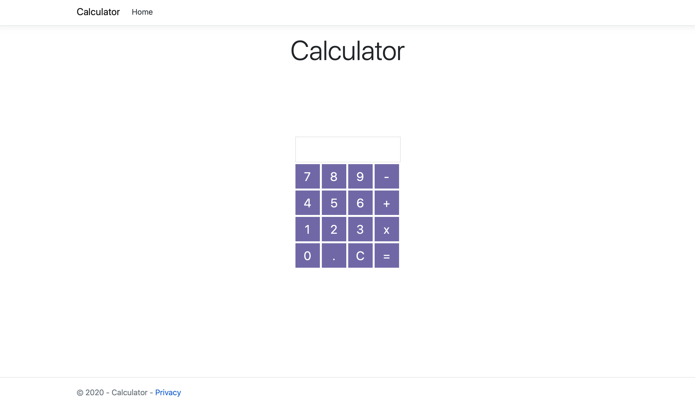
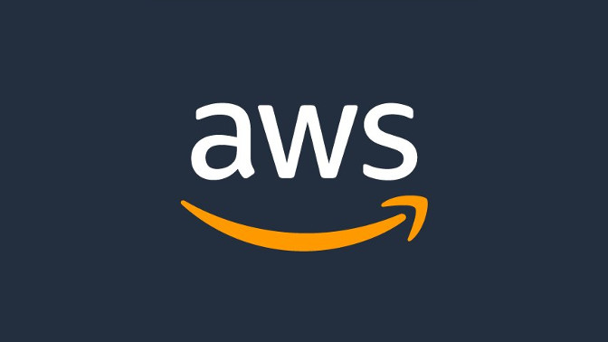
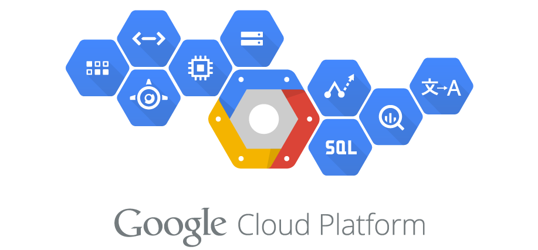

Análisis de proveedores
La prueba de una aplicación sencilla se realizó en tres distintos proveedores, cada uno presentó diferencias en el desarrollo de la aplicación. Se llevaron pruebas a cabo en Microsoft Azure, Google Cloud Platform y Amazon Web Services; las tres resultaron complicadas de aprender pues no se tenía conocimiento de cómo usar estas plataformas. Uno de las características más evidentes de estos tres proveedores es que todos son de cobro, aunque también permiten tener una primera experiencia sin compromisos de dinero por diferentes periodos de tiempo. Todos dan ofertas de acceso gratuito a las funciones más básicas durante los primeros 12 meses y además Microsoft Azure y Google Cloud Service regalan una cierta cantidad de dinero para que el usuario pueda gastar en ese periodo, lo mejor de esta oferta es que los servicios adquiridos no caducan luego del primer año. Otra diferencia entre los proveedores es la cantidad de funcionalidades que ofrecen. AWS lidera este aspecto porque ofrece muchos más servicios, debido a que son los pioneros de esta tecnología. Por otra parte Azure y GCP ofrecen los mismos productos mezclados con varias de las ventajas de las empresas que poseen a los proveedores implementadas, pero en realidad no aportan mucho con diferentes funcionalidades. En lo que más aportan es en la competencia, lo cual es sumamente importante para que este tipo de negocios crezcan rápidamente. Con la aplicación sencilla de una calculadora que se realizó en la investigación se pueden descifrar numerosas diferencias entre los principales proveedores. Con respecto a la dificultad, los tres proveedores de AWS, Microsoft Azure y GCP son complicados de usar para un novato en estos temas.
El link del repositorio puede accederse en https://github.com/moniwm/CloudComputing.git
Amazon Web Services
El Amazon Web Service es el proveedor más antiguo y con esos años de ventaja se han implementado más funcionalidades que los otros proveedores no han podido. En el AWS las funcionalidades vienen bien definidas y separadas, ya que en este proveedor sí resulta muy grande como para almacenar fácilmente todas sus aplicaciones en una pantalla. Este proveedor es más amigable para los proyectos, aunque tal vez la interfaz gráfica no sea la más estructurada estéticamente sí es más ordenada. AWS está estrictamente limitado por el concepto de trabajo en la nube. A diferencia de google, para poder crear una aplicación web no se necesitó ningún programa para descargar, todo está implementado en la plataforma. Incluso se puede modificar el código si el lenguaje de interés es soportado. Para el desarrollo de la aplicación web se usó elastic beanstalk pero la plataforma trae otras herramientas implementadas.
Google Cloud Platform
El GCP resulta confuso ya que tiene muchas funcionalidades en una única pestaña, prácticamente toda la información se puede acceder con pocos clicks, lo cual vuelve el servicio más simple para los profesionales. En cambio para los principiantes en el tema es muy complicado ubicarse en la plataforma. Este no cumple con el concepto fundamental de trabajo completamente en la nube, ya que para poder obtener un servicio web se debe instalar un SDK Shell para el control de los archivos que son manejados desde el computador. Su documentación es abundante, lo cual genera que uno se pierda aún más al empezar a lidiar con el proveedor y los tutoriales de video que tienen son pocos y tampoco dejan claros los conceptos básicos de navegación en la interfaz.
Microsoft Azure

Al haber comparado todos los proveedores, Azure fue el más amigable de utilizar gracias a su adaptación con Visual Studio, lo cual hizo que el deployment de la aplicación se pudiera realizar de una forma más sencilla. Por lo tanto, este es el proveedor en el que más nos vamos a enfocar.
Primeramente, cabe destacar que Azure ofrece licencias estudiantiles las cuales, al crear una cuenta, se reciben $200 de crédito y 12 meses de acceso gratis a diferentes productos que ofrece el proveedor
. Una vez que se crea la cuenta se puede acceder a todos los servicios y productos que Azure ofrece tales como máquinas virtuales, cuentas para bases de datos, "App Services", etc. Este último fue utilizado como PaaS para la implementación de nuestra aplicación.


Una vez creada el "App Service", se puede acceder a una pantalla de inicio (imagen de la izquierda) en la cual se puede observar información como el nombre del grupo de recursos al cual pertenece la aplicación, el ID de la suscripción, el estado de la aplicación, y el URl desde el cual se puede correr la aplicación creada una vez que se integre a la plataforma.
El URL inicialmente no tiene funcionalidad porque se debió integrar primero a un repositorio de github donde se encontraba el proyecto (imagen central e imagen de la derecha) y por último, desde Visual Studio se seleccionó la opción de publicar para que la app se cargara correctamente a la plataforma. Todo esto se logró gracias a que Azure ofrece un tutorial tipo Webinar al crear la cuenta en el cual se explican los principales productos y algunas de las funcionalidades básicas
Cuando se completan todos los pasos al acceder al URL (https://paastestdatosi.azurewebsites.net) en la página de inicio del "App Service" creado, se logró correr la aplicación de la calculadora.
Conclusiones
- Los proveedores de nube son cómodos con el precio, además publican grandes ofertas para las personas que están aprendiendo a usar los programas brindados.
- El proveedor de google no es recomendado para principiantes en tema porque resulta difícil ubicarse en la interfaz y además se debe saber usar la línea de comandos.
- Google cuenta con mucha ayuda escrita para el usuario pero sus canales de videos presentan filmaciones viejas que no se ajustan a los que es el GCP de hoy.
- El proveedor más amigable con el usuario es el de Amazon Web Services porque el servicio brinda todo dentro del proveedor, tutoriales explícitos que explican cómo realizar muchas de las acciones paso a paso.
- Microsoft Azure es el proveedor más flexible debido a las integraciones con los otros programas de Microsoft como Visual Studio, el cual permite desarrollar servicios web de una forma más sencilla.
- A todos los proveedores se les puede facilitar el acceso al código por medio de una integración con GitHub.
Recomendaciones
- Si usted es un principiante en el tema y quiere aprender a usar el PaaS de un proveedor en internet lo ideal es empezar con AWS pues es el que posee más información específica con respecto a los que un usuario de este tipo necesita.
- Para probar los servicio de un proveedor se necesita una tarjeta de crédito o de débito, por lo tanto se recomienda tener la disponibilidad de una.
- Se recomienda dejar el proveedor de Google Cloud como última plataforma en el proceso de aprendizaje del cloud computing, ya que para poder usarlo se necesita saber un poco más de las pocas opciones que muestra su página principal.
- Microsoft cuenta con una gran cantidad de información en sus páginas web de documentación que favorecen el uso del proveedor Azure en caso de que se decida usar este en algún proyecto.